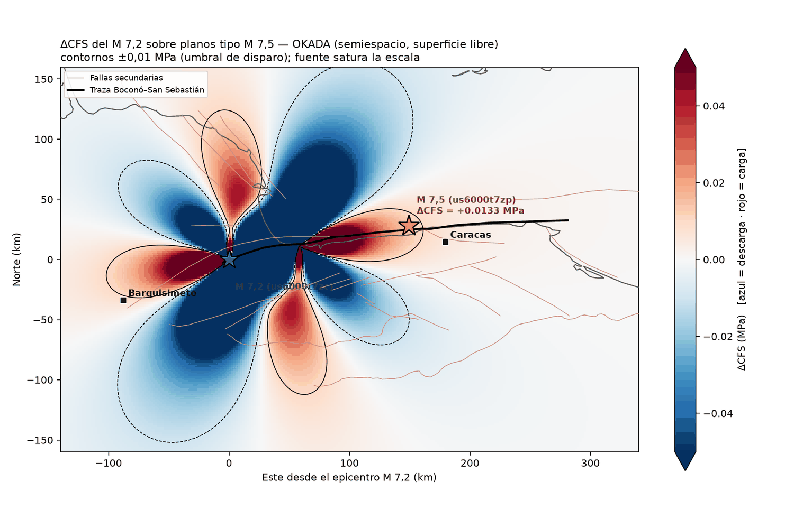
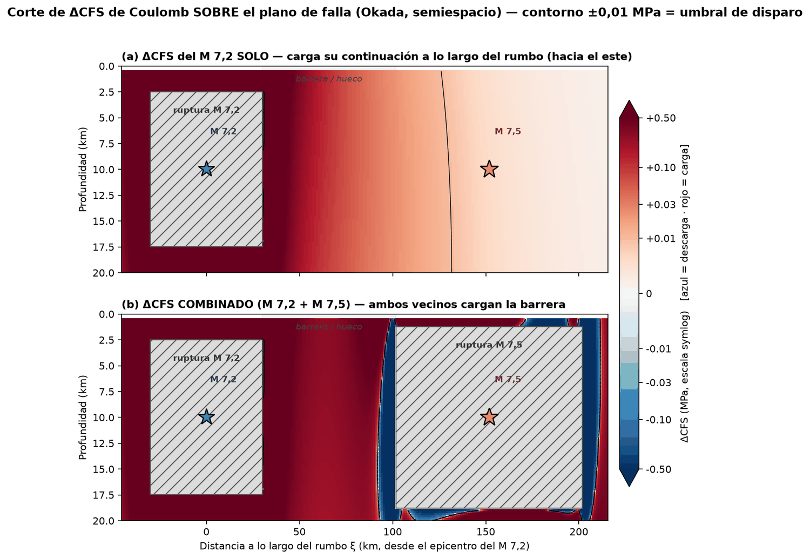

Método · transferencia de esfuerzo — La Guaira, 24-jun-2026
Cuando una falla rompe deja unos tramos más cargados y otros relajados. El mapa de ese reparto, cómo se calculó de dos maneras —Kelvin y Okada—, con qué insumos, y qué dice del tramo que quedó entre las dos rupturas.
Queda una pregunta que las demás páginas no responden: ¿por qué hubo un segundo? Cuando una falla rompe no descarga la tensión por igual en todas partes — deja unos tramos más cargados y otros relajados. El mapa de ese reparto se llama ΔCFS, cambio en el esfuerzo de Coulomb, y es lo que se calcula aquí.
La imagen que mejor funciona es doblar una galleta hasta casi partirla. Justo delante de la grieta, en su misma línea, el material queda cargado; a los lados, se afloja. Visto desde arriba, ese reparto dibuja cuatro pétalos — la mariposa. En los mapas, rojo es «lo acerca a romper» y azul, «lo aleja»; a un tramo azul se le dice que está en sombra. El contorno de ±0,01 MPa es la línea de aviso convencional: el empujón mínimo que se considera capaz de contar.

El hueco entre las dos rupturas admite dos lecturas opuestas, y no son inocentes: o está trabado y cargado —una zona que aguanta y podría soltar— o está relajado. Para distinguirlas se calculó el empujón sobre ese tramo suponiendo que él mismo hubiera deslizado —que es lo que le asigna el modelo de falla finita del USGS para el segundo sismo, con sus 130 parches de deslizamiento— y suponiendo que no, que es lo que dice nuestra inversión. El resultado no cambia: en las dos versiones queda en azul. Está en sombra porque sus dos vecinos lo dejaron así, como el trozo flojo de una cuerda tirada por los dos extremos.

La lectura que ordena todo lo anterior es geométrica. Los tramos torcidos y ramificados de una falla funcionan como badenes capaces de frenar una ruptura en crecimiento, y quedan muy apretados; es lo mismo que se ha descrito en la falla de San Andrés. La barrera de este caso habría actuado así: impidió que el primer sismo siguiera de largo en una sola ruptura gigante y obligó a que la Tierra rompiera en dos. Por eso no hubo un terremoto enorme, sino dos.
El cambio de esfuerzo de Coulomb sobre una falla receptora es ΔCFS = Δτ + μ′·Δσn: el cambio del esfuerzo de cizalla en la dirección del deslizamiento más el del esfuerzo normal, ponderado por un coeficiente de fricción aparente μ′ = 0,4 (King, Stein y Lin, 1994; Stein, 1999). El medio es elástico, homogéneo e isótropo, con μ = 33 GPa y ν = 0,25. La falla receptora tiene rumbo 86°, buzamiento 88° y deslizamiento 180°: la geometría del enlace San Sebastián–Morón–Boconó, dextral y casi vertical.
Las fuentes. El M 7,2 se representa por un plano uniforme de 60 × 15 km con 2,67 m de deslizamiento —momento 7,9 × 1019 N·m, rumbo 79°—, coherente con la inversión de la sección 06 de la portada. El M 7,5 se toma del modelo de falla finita del USGS para el evento us6000t7zp: 130 subfallas, Mw 7,54, rumbo ≈ 86°, buzamiento ≈ 77°, centrado 149 km al este y 28 km al norte del primer hipocentro; 26 parches someros se desplazaron ~1 km en profundidad para que no cortaran la superficie libre. El cálculo del ΔCFS es propio: del USGS entran solo los dos epicentros y ese modelo de deslizamiento, y el USGS no publica ningún ΔCFS para esta secuencia.
Ninguno de los deslizamientos que entran al cálculo se midió: nadie estuvo sobre la falla con una cinta métrica. Se deducen del momento sísmico, que sí se estima con las ondas, y de las dimensiones que se le asignan al plano. La receta tiene dos pasos y una sola fórmula.
1 · De la magnitud al momento. La magnitud de momento es una manera de escribir el momento sísmico en escala logarítmica: M0 = 101,5·Mw + 9,1 N·m (Hanks y Kanamori, 1979). Para Mw 7,2 eso da 7,9 × 1019 N·m; para 7,5, 2,2 × 1020 N·m.
2 · Del momento al deslizamiento. El momento es rigidez por área por deslizamiento, M0 = μ · L · W · D. Fijados μ = 33 GPa y el rectángulo L × W, el deslizamiento medio queda determinado: D = M0 / (μ · L · W). No hay nada más que ajustar.
| Fuente | Mw | M0N·m | PlanoL × W | DeslizamientoD = M0/(μ·L·W) |
|---|---|---|---|---|
| M 7,2mapa y sección | 7,2 | 7,9 × 1019 | 60 × 15 km = 900 km² | 2,67 m |
| M 7,5, rectángulosolo en la sección de canto | 7,5 | 2,2 × 1020 | 100 × 18 km = 1 800 km² | 3,77 ≈ 3,8 m |
| M 7,5, falla finita del USGSen el mapa | 7,54 | 2,5 × 1020 | 130 parches, ~254 km de rumbo ≈ 13 000 km² | 0,59 m medio · 1,82 m máximo |
Léase la tabla con cuidado, porque dice tres cosas. La primera: 2,67 m es la dislocación que de verdad entra en Okada para el primer sismo, que no tiene modelo de falla finita; es un valor derivado, y se documenta como tal. La segunda: el ≈ 3,8 m del segundo sismo no aporta información nueva —es la misma magnitud repartida sobre un rectángulo adoptado— y por eso se usa solo en la figura de canto, donde hace falta un plano simple para mirar el tramo intermedio; con la magnitud 7,54 del USGS saldría 4,3 m, y con un rectángulo más corto, más. La tercera: el modelo de falla finita reparte ese mismo momento sobre un área unas siete veces mayor, y de ahí que su deslizamiento medio sea 0,59 m y no 3,8. No son dos medidas en desacuerdo: son dos maneras de repartir el mismo M0.
Y lo que importa para el resultado: lejos de la fuente el campo de esfuerzos depende del producto L · W · D = M0/μ, que es el mismo en las tres filas. El deslizamiento por sí solo no es un dato del que dependa el ΔCFS a 150 km; lo que cambia con la elección del plano es el detalle cerca de la falla. Por eso el ΔCFS se reporta en MPa y los deslizamientos no se presentan como resultado, sino como el insumo que se declara para que el cálculo sea reproducible.
Dos maneras de resolverlo. Se hizo primero con la función de Green de Kelvin —una fuerza puntual en un espacio elástico infinito, integrada sobre la falla y derivada numéricamente para obtener los esfuerzos—, que ignora la superficie de la Tierra; y después con las soluciones analíticas de Okada (1992) para una dislocación rectangular en un semiespacio, que la incluyen. La segunda es la que se muestra en los mapas. Las dos coinciden en el signo en todos los sitios que importan, y difieren en la magnitud exactamente donde la superficie libre debe pesar: en el tramo somero entre las dos rupturas.
| Magnitud | Kelvinespacio infinito | Okadasemiespacio, con superficie libre |
|---|---|---|
| ΔCFS en el hipocentro del M 7,5, por el M 7,2 | +0,0071 MPa | +0,0133 MPa |
| Mediana en el tramo intermedio, con el deslizamiento del USGSE 45–80 km del primer hipocentro | −0,084 MPa | −0,26 MPa |
| Mediana en el tramo intermedio, sin ese deslizamiento | −0,081 MPa | −0,31 MPa |
| Fracción del círculo de 100 km en carga positiva | 40 % | 41 % |
| Sobre el plano, en la barreradel centro del tramo a su borde | no resoluble | +2,6 → +0,014 MPa |
Y las réplicas. De las 1 559 réplicas utilizables del catálogo SIGEOS/FUNVISIS (24 de junio a 29 de agosto), el 83 % cae en zonas de carga positiva. La cifra impresiona menos de lo que parece: un control nulo que rota rígidamente el patrón de ΔCFS alrededor de la falla da 53 ± 23 %, y frente a él el 83 % queda en z = 1,3, p = 0,18. No es significativo, y se dice así: las réplicas se agolpan donde rompieron las dos fuentes, y ahí el cálculo estático no aplica. Lo que sostiene la lectura no es el conteo de réplicas sino la geometría del patrón, que coincide con la dirección en que ocurrió el segundo sismo.
Este cálculo forma parte de un manuscrito en borrador: «Los terremotos del 24 de junio 2026 en Venezuela: estructuras litosféricas en el norte de Sudamérica, comportamiento de las réplicas y la importancia de la microzonificación sísmica para la reconstrucción de La Guaira», de Michael Schmitz, Leonardo Alvarado, Rommel Contreras, Luis Manuel Hernández-Ramos y Antoine Mocquet, donde acompaña el análisis de las réplicas y del valor b. El cálculo es nuestro; del USGS solo entran los epicentros y el modelo de falla finita del segundo sismo. Hasta que el artículo se publique, lo que se lee aquí es un borrador y debe citarse como tal.
El relato completo, con la comparación entre las dos maneras de calcularlo —la que ignora la superficie de la Tierra y la que no— y con las analogías desarrolladas, está en El mapa invisible que dejan los terremotos, escrito para leerse sin ser físico.
{kind=link}
{kind=link}